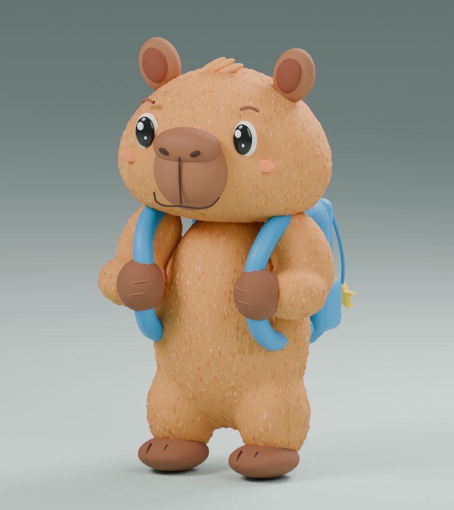
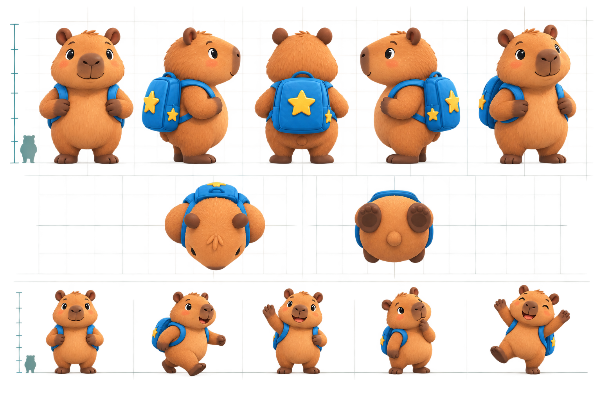

ETAPA 02a · v002 · PENDIENTE DE REVISIÓN
Corrección de la mascota
Iteración interna incompleta, sustituida por v004: abrir la revisión actual. Solo se renderizó la vista tres cuartos de v002.
Modelo 3D real: hocico vertical, fosas nasales, mejillas anchas, ojos con menos blanco, manos sujetando las correas y pelaje corto esculpido. Todos los renders proceden del mismo archivo Blender; no son nuevas ilustraciones de IA.
Modelo GLB · Archivo Blender · Plan de producción
Comparación con la versión anterior
 v001 · anterior, descartada visualmente
v001 · anterior, descartada visualmente

v002 · nueva revisión de forma y superficie

Objetivo artístico aprobado · referencia, no render del modelo entregado
Candidato estático, no modelo final ni réplica exacta. Sin rig, animaciones o colisiones. El relieve de pelo aumenta la geometría: 98.064 triángulos, GLB de 2,93 MB. Antes de usarlo en celular habrá que optimizar la superficie y probar el resultado en el motor.
Galería local sin conexión. CPU, dos hilos, 768 × 864 px. La iluminación de estudio no sustituye la prueba visual en PlayCanvas.